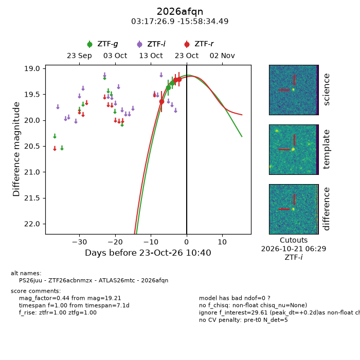
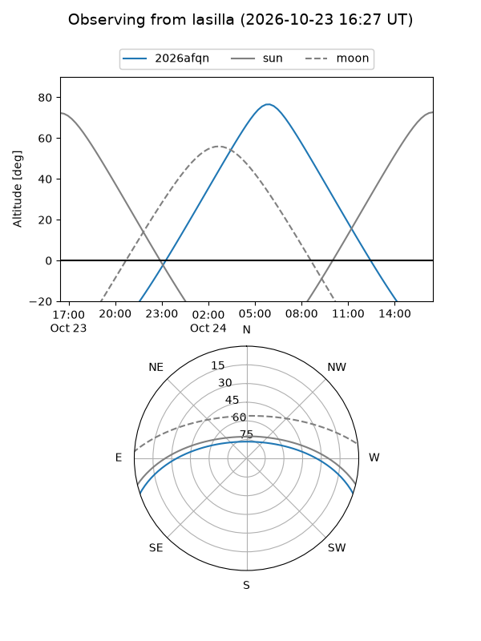
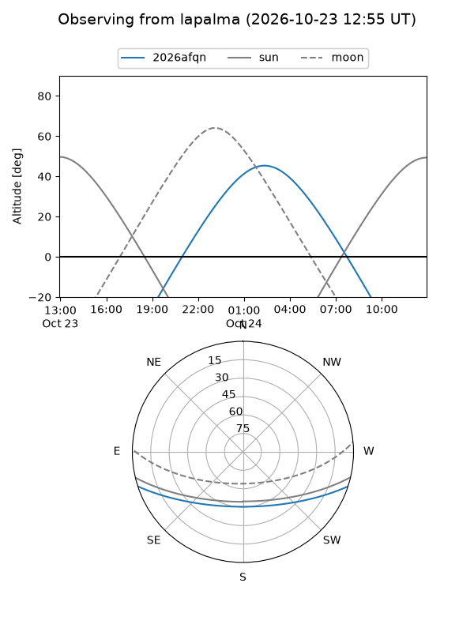
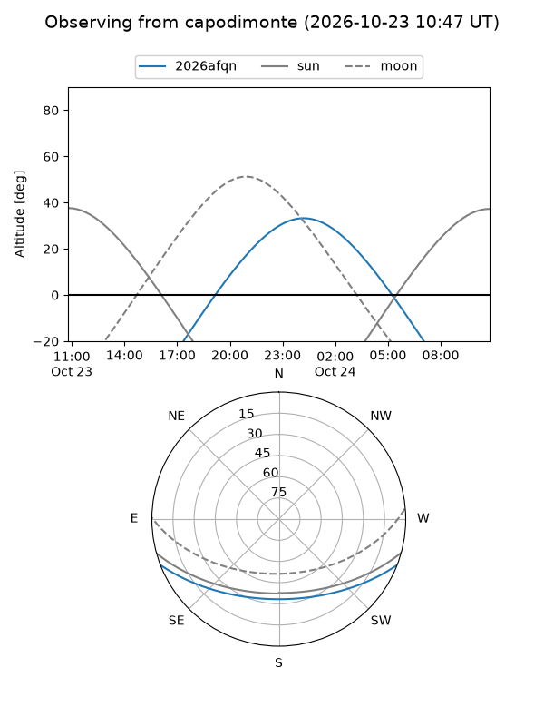
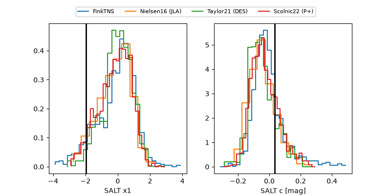

2026afqn
Target 2026afqn at 2026-10-23 10:42
Aliases and brokers:
FINK-ZTF: ztf.fink-portal.org/ZTF26acbnmzx
Lasair-ZTF: lasair-ztf.lsst.ac.uk/objects/ZTF26acbnmzx
ALeRCE-ZTF: alerce.online/object/ZTF26acbnmzx
YSE-PZ: ziggy.ucolick.org/yse/transient_detail/2026afqn
TNS name: wis-tns.org/object/2026afqn
Direct TNS query: direct search
alt names
ZTF26acbnmzx (ztf,fink_ztf)
2026afqn (tns,yse)
ATLAS26mtc (atlas)
PS26juu (panstarrs)
Coordinates:
equatorial (ra, dec) = 49.3620,-15.97625
equatorial (HMS+DMS) = 03:17:26.87,-15:58:34.49
galactic (l, b) = (202.2939,-54.41693)
Flags:
peak dt: +0.2
Photometry:
last ztfg=19.28, ztfr=19.21
2 ztfg, 3 ztfr detections
Lightcurve

Visibility



Additional plots
